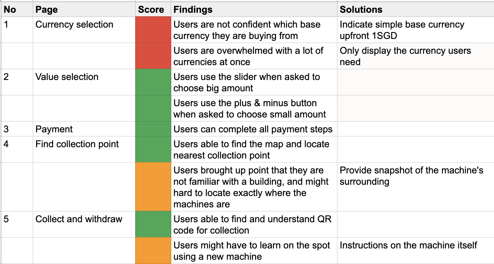

Currency Exchange Transaction App 🤑
How might we enable consumer to get the best rates in the most convineient way.
Background
FX Change is a start-up that running a currency withdrawal machine service. As a new product in the market, they are planning to launch mobile application to enhance their customer’s experience in buying currencies especially for the local who are planning to travel. Worked directly with stakeholders, the team consisted of myself, lead designer, a project manager, and developers.
My role
User Research, Prototype, UI Design, Motion Design.
Goal Overview
Target Audience
Locals 22 to 36 years old
End Goal
Increase transactions from the mobile app
Approach
Potential User Interview
The participants are locals who live in Singapore, working adults and university students, 22-36 years old, travel at least 3 times a year.
Persona

Insights

Site map

Prototype & validate
We quicky prototype a wireframe and validate our idea for the main functions. And gather feedbacks from usabality testing to iterate.
Wireframe & Flow


Some points gathered from users
Iterate & build
From the feedbacks and data collected. We iterate the wireframe and come up with final design and pass the assets to the devs. For art direction, we have to explore on how they want to position themselves as there’s no branding except for the logo. We proposed for a trust and frugal tone of voice, which made use of their dark blue and gold color to show the essence of our product.